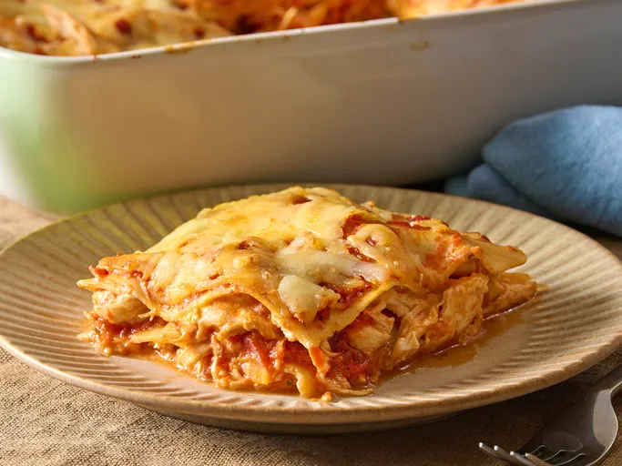

Creamy Chicken Lasagna

Description:
This easy lasagna recipe is a convenient and flavorful option for anyone looking to make a comforting homemade
meal without spending too much time preparing complicated ingredients. It uses jarred spaghetti sauce, which
makes the layering process simple while still providing a rich, savory tomato flavor throughout the dish. The
sauce pairs well with the other ingredients, creating a hearty lasagna that is both satisfying and easy to
assemble. Its straightforward preparation makes it a great choice for busy weeknights, family dinners, or
whenever you want a classic comfort food with minimal effort.
One of the highlights of this recipe is the use of cream cheese instead of the traditional ricotta, giving the
lasagna an especially rich, smooth, and creamy texture. Reviewers appreciate this substitution because it adds a
slightly different taste and consistency while keeping the dish comforting and delicious. As Allrecipes member
ADLUV describes it, “It is a nice change from regular lasagna,” making this recipe a worthwhile variation for
those who enjoy trying a fresh take on a familiar favorite.
Ingredients
- 6 uncooked lasagna noodles
- 3 skinless, boneless chicken breast halves
- 2 cups shredded mozzarella cheese, divided
- 1 (8 ounce) package cream cheese, softened
- ¼ cup hot water
- 1 cube chicken bouillon
- 1 (26 ounce) jar spaghetti sauce
Steps:
- Gather all ingredients. Preheat the oven to 350 degrees F (175 degrees C).
- Bring a large pot of lightly salted water to a boil. Cook lasagna noodles in boiling water, stirring
occasionally, until tender yet firm to the bite, about 8 minutes. Drain, rinse with cold water, and set
aside.
-
Meanwhile, place chicken in a saucepan with enough water to cover; bring to a boil. Cook until chicken is no
longer pink and the juices run clear, about 20 minutes. Remove chicken from the saucepan and shred.
-
Combine shredded chicken, 1 cup mozzarella cheese, and cream cheese in a large bowl. Dissolve hot water and
bouillon in a liquid measure; pour over chicken mixture and stir until well combined.
-
Spread 1/3 of the spaghetti sauce in the bottom of a 9x13-inch baking dish. Cover with 1/2 of the chicken
mixture and top with 3 lasagna noodles; repeat. Top with remaining sauce and sprinkle with remaining 1 cup
mozzarella cheese.
-
Bake in the preheated oven for 45 minutes.
-
Serve and enjoy!
Home